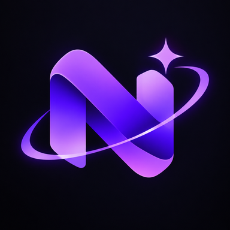

Novix
NovixNovix for PC & Laptop
$100
For desktop and laptop computers.
An operating system built from scratch, one line at a time.

We want to be honest with you. Novix OS is in early development and is not ready for everyday use. The editions below are not on sale yet. The Novix Imager, the tool that writes Novix onto a USB stick, is the part you can download today with a free Novix account.
One-time purchase for each edition. No subscription. These are planned prices and may change before launch.
$100
For desktop and laptop computers.
$50
For tablets.
$25
For phones.
The Novix Enterprise Management OS is being designed for schools and businesses that need to manage many devices from one place, with devices enrolled only by the organization's owner. It is not self-serve: organizations get access by talking with us first.


Not yet. The editions are in progress. You can download the Novix Imager to see how installation will work.
The first edition targets 64-bit PCs and laptops. Support for real hardware, such as WiFi, graphics cards and USB devices, is still being built, so early versions are best tried in a virtual machine.
The Imager is not code-signed yet, so your system shows a warning for new, unrecognized software. Only download it from this site's download link.
Writing directly to a USB stick needs it. The Imager only lists USB drives, never your system disk, and asks you to confirm before erasing anything.
You must be at least 15 to create an account. If you are younger, a parent or guardian can create the account and set Novix up for you.
We will publish it here, and in the User Agreement, before Novix goes on sale.